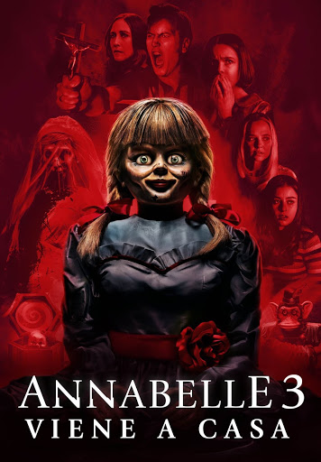

pelicula:
Annabelle 3: vuelve a casa

LA PUEDES VER AQUI
Ed y Lorraine Warren tratan de encerrar bajo llave a Annabelle, una muñeca poseída.
Como demonólogos la colocaran en una vitrina bendecida como medida de seguridad, sin embargo,
una noche terrorífica Annabelle despertará a otros espíritus malignos que se encuentran en la habitación
y que tendrán una nueva fijación: la hija pequeña del matrimonio y sus amigos.